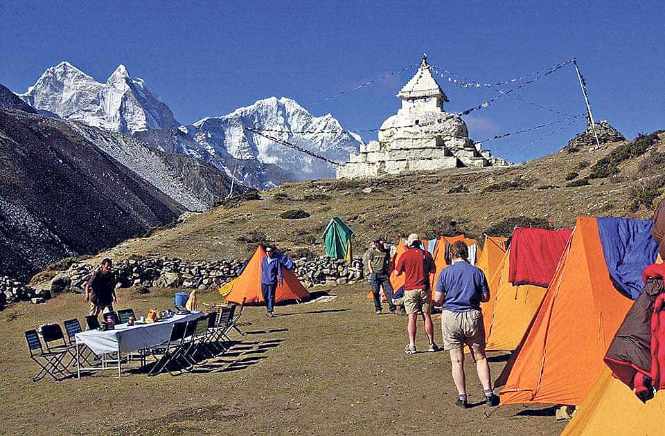

Latest News
Atletico Madrid Stages Comeback to Draw 4-4 with Barcelona
Published on: February 25, 2025
Source: Reuters
Summary: Atletico Madrid pulled off a remarkable comeback to draw 4-4 with Barcelona in the first leg of their Copa del Rey semi-final. The match featured early goals from both teams, with Atletico's Alvarez and Griezmann scoring within the first six minutes. Barcelona responded with goals from Pedri, Pau Cubarsi, and a header from Inigo Martinez, taking a 4-2 lead. However, late goals from Atletico's Marcos Llorente and Alexander Sorloth ensured the match ended in a thrilling draw. The second leg is scheduled for April 2 in Madrid. Atletico's Alvarez praised the team's resilience, highlighting their mentality to stay in the game despite setbacks.
Nepal's Government Announces New Policy to Boost Tourism
Published on: February 24, 2025
Source: The Kathmandu Post
Summary: The Nepalese government has announced a new policy aimed at boosting tourism in the country. The initiative includes providing incentives to tour operators and streamlining visa procedures to make it easier for foreign visitors to explore Nepal's natural beauty. With Nepal's rich cultural heritage and breathtaking landscapes, officials are hopeful that this policy will attract more international visitors, boosting the economy and creating new job opportunities for locals. The tourism sector, which contributes significantly to Nepal's GDP, is expected to recover rapidly from the pandemic's impact.
Global Climate Summit Concludes with Major Agreements
Published on: February 22, 2025
Source: BBC News

Summary: The Global Climate Summit, held in Paris, concluded with significant agreements from world leaders to combat climate change. Several countries have pledged to reduce carbon emissions by 50% by 2035 and to invest heavily in renewable energy sources. The summit also introduced a new global fund to support developing nations in tackling the effects of climate change. This historic agreement aims to limit global warming to 1.5°C and is seen as a major step forward in the global fight against climate change.